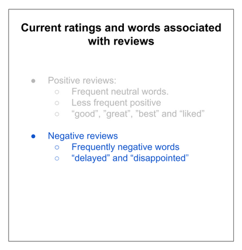
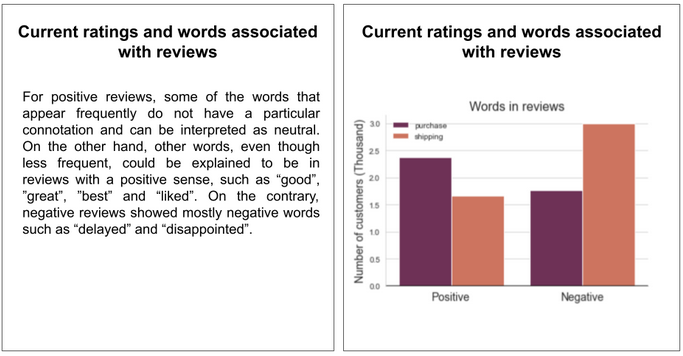
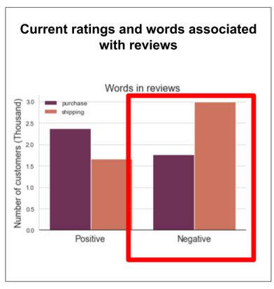

Construyendo la presentación oral
Contents
Construyendo la presentación oral#
Es una mala idea adentrarse a codear sin tener un plan de que estamos buscando y porque. De la misma forma es muy mala idea crear nuestros slides sin tener la idea de a quien vamos a presentar las slides, con que sentido y que contenido.
Planeando la charla#

Para presentar una charla debemos tener algunos puntos establecidos antes de pensar en nuestros argumentos y slides.
Propósito#
Para definir el propósito de nuestra presentación debemos pensar como primer punto en el tipo de presentación que realizaremos. Es o no una presentación informativa?, si lo es, debemos informar por ejemplo sobre el numero de ratings positivos, negativos y palabras asociadas con las opiniones negativas.
Informativa
Instructiva
Persuasiva
Audiencia#
Una vez entendemos el propósito de nuestra presentación, pensemos sobre la audiencia. Nuestra presentación esta dirigida a colegas a un manager, ejecutivo o un cliente.
Pensemos en el tamaño de nuestra audiencia. Nos dirigimos a un pequeño grupo de 10 personas o estaremos en una conferencia con mas de 100 personas.
Quien es nuestra audiencia
Que tan grande es nuestra audiencia
Message#

Estudios advierten que nuestra audiencia en promedio olvidan el 90% de lo que se habla en una presentación una semana después. Si recuerdan al menos una cosa de nuestra presentación, que quisiéramos que fuese?.
Podemos trabajar desde esa pregunta y luego podemos incluir los demás elementos a nuestra presentación.
Nuestras palabras iniciales deberían captar a nuestra audiencia y servir como introducción de aquello que deseamos que recuerden.
Luego de una semana se olvida casi el 90%
A partir de esta afirmación que deseamos comunicar.
Palabras iniciales
Deben captar la audiencia
E.g: los ratings negativos ahuyentan los clientes del sitio web
Mensaje Central: es aconsejable que solo sea una oración
Los envíos retrasados es la causa principal de los review negativos; las acciones inmediatas son necesarias para revertir la situación.
Mensaje de Cierre: resume la presentación y las fortalezas del mensaje central
E.g: Actualmente las ventas disminuyen, por el contrario las opiniones negativas han aumentado. Este problema se debe principalmente a los envíos retrasados. Se necesitan acciones contundentes para revertir la situación.
Estructura#

Introducción
Es un contexto rápido de la problemática y a la vez capta la atención de la audiencia.
Métodos
Esta parte de la estructura depende del nivel de experiencia técnica de la audiencia.
Es un análisis de el modelo
Conclusión
Hacemos referencia a la introducción y agregamos las conclusiones del hecho junto a las recomendaciones activas a seguir. Esta técnica permite cautivar y facilita la atención de inicio a fin.
Delinear
Es el momento para presentar los gráficos que deseamos usar por secciones y ordenes. Deberíamos tener cerca de 5 secciones evitando siempre sobrecargar.
Razones para el análisis
Análisis exploratorio
Sentimientos sobre el análisis
Conclusiones
Acción-reacción
Slides#
De forma generalizada los slides son una herramienta de apoyo para nuestra presentación. De igual forma deben seguir unos lineamientos.
Apoyan nuestra historia
Slides muy precisos y concisos
Contar los slides o precisar tiempos = mala métrica
Podemos concentrarnos en un mensaje por slide
Color#
Los colores, al igual que las partes de la charla, deben tener un propósito claro del porque. Si no posee un significado relevante el mismo, debe omitirse.
Tomemos en cuenta aspectos estéticos como el contraste con el fondo de nuestras diapositivas y los colores; también debemos ser inclusivos (daltonismo, protanipia, etc.)
Fuentes#

Las fuentes facilitan la comprensión del mensaje. Los expertos no concuerdan en cual es mas fácil de leer; San-Serif o Serif. Aunque en términos generales, Serif se utiliza para textos imprimibles y Sans-Serif para textos que sean leídos en pantalla.
Comic Sans Ms es apropiado para captar la atención en niños.
Normalmente las slides son difíciles de leer, no por el tipo de fuente sino por la cantidad de texto o por el tamaño del texto.
Podemos hacer uso de otras características
Muchas otras fuentes
Espacio entre letras
Bold, italic o tamaños
Text Slide#
Incluir demasiado texto produce un impacto negativo, desde el punto de vista de trabajo cognitivo. Al incluir mucho texto la audiencia tiende a leer todo, en lugar de prestar atención al ponente.

Una practica mas recomendable, es escribir solamente los puntos principales en lugar de textos largos. Podemos encerrar nuestro título con un headlight.

El layering es una técnica que divide una slide compleja en pequeños puntos. La idea de layering es aclarar la idea y aportar una estructura limpia, facilitando en enfoque de la charla dividiendo el tema en pequeños puntos
Visualization Slide#

Cuando necesitamos dar explicaciones amplias podemos apoyarnos en las Viz. E igualmente hacer uso del layering y highlights para apoyar un punto principal.

Utilizar una o dos gráficas por slide con tamaño original.
Script#

Escribir nuestro scripts es una buena practica para preparar el contenido de la charla y familiarizarnos con el contenido (No memorizarlo).
Practicar: ensayar lo más cerca posible de la realidad
Utilizar los slides preparados
Hablar en voz clara y alta
Detectar factores de distracción (palabras como ‘e’, ‘uhm’, ‘básicamente’)
Encontrar palabras conectoras para utilizar entre los slides
Preparar el Q&A
Anticipar posibles preguntas.
Debemos estar consientes que nuestras emociones son importantes, si nuestra audiencia nota inseguridad en nuestra voz, podemos perder convencimiento sobre la charla.
Buenas practicas de la charla#
Espacio de atención reducido: tener en mente de 5 a 20 minutos de charla, mas aya de eso nuestra audiencia perderá el interés.
Hablarle a la audiencia (no hablar para ellos)
Desarrollemos una relación de dos vías: mostremos empatía y actuemos como un guía.
Timing: asegurarnos de no durar mas del tiempo asignado
Ritmo: mantener una ritmo lingüístico moderado y con pausas entre slides.
Siempre mostrarse abierto a preguntas durante o luego de la presentación.
Una presentación efectiva#

Menos es MAS
Le habla a la audiencia
El mensaje que transmite debe ser consistente y persistente
Requiere práctica si es necesario.
Se anticipa a preguntas
Evitar errores comunes#
Para evitar errores primero, necesitamos recapitular todas las buenas practicas.
Planear la charla
Prepararla y practicarla
Presentarla
Para presentarla debemos tener en cuenta algunos errores comunes y evitarlos.
Charlas Largas#
las charlas largas tienden a ser inefectivas, la atención de nuestra audiencia se torna apática a tanto contenido y sin mucho espacio a tiempo para preguntas y respuesta.
Propósito#
Establezcamos siempre el propósito al principio para un mejor entendimiento, esto le dará mas importancia a nuestro hallazgos y dejaremos un mejor recuerdo.
Guiar a la audiencia#
Como ponentes es necesario GUIAR a la audiencia con una secuencia que mantenga la atención sin dejar todas nuestras conclusiones para el final de la charla.
Envolver a la audiencia#

Un error común es presentar nuestro script como un monologo, esto aparta a nuestra audiencia y no permite involucrarlos. Podemos realizar una introducción fuerte para establecer una relación de quien somos y porque estamos realizando la presentación
Buenos días mi nombre es Aldeir y estoy aquí para presentar como afectan las puntuaciones negativas a los activos empresariales
Nuestra audiencia no es consciente de nuestro proceso de pensamiento; siempre debemos establecer nuestras suposiciones clave. Podemos hacernos preguntas a nosotros mismo para conectar con la audiencia.
Una técnica util para sostener la atención de la audiencia, es relacionando cada slide con la idea principal; esta forma se sentirá como un solo cuento.
Mensaje corporal#
Si lo que importa es el mensaje… el ponente es el centro de la presentación. Hagamos énfasis en un lenguaje y gestos naturales.
Posturas correctas y sonrisas son un punto a favor de nuestro mensaje corporal.
Tonalidad de la voz#
Utilizar diferentes tonalidades de voz
Velocidad
Fast: urgencia, excitación y emoción
Slow: puntos importantes o fundamentales
Volumen
Live: hablar alto
Online: comprobar el micrófono
Entonación: nuestro tono debe mostrarse entusiasmado e interesado en el tema.